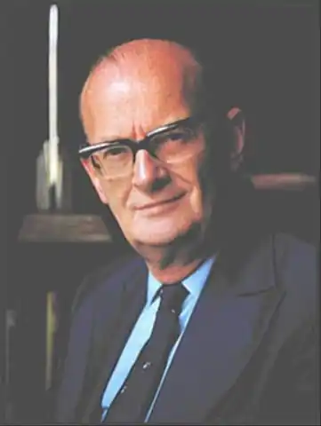

КЛАРК, Артур Чарлз (Clarke, Arthur Charles — нар. 16.12. 1917, Майнхед, Англія) — англійський письменник-фантаст і популяризатор науки.Писати фантастичні оповідання почав у школі. Закінчив із відзнакою фізико-математичний відділ Лондонського університету. У роки Другої світової війни служив у військовій авіації, брав участь у налагодженні першої радарної установки. Публікуватися почав із 1947 р. Член Королівського астрономічного товариства Великобританії, у 40—50-х pp. — голова Британського товариства міжпланетних сполучень. За науково-популярні книги та статті нагороджений премією Калінґа (присуджується ЮНЕСКО) у 1962 p., за романи про космос — преміями Неб'юла та Хюґо — 1947 р. У 50-х pp. Кларк захопився підводним плаванням та кінозйомками життя моря, що знайшло відображення у його книгах, написаних спільно із співробітником М. Вілеоном: "Хлопчик під водою" ("The Boy Beneath the Sea", 1958), "Велика глибина" ("The First Five Fathoms", 1960), "Скарб Великого рифа" ("The Treasure of the Great Reef", 1962) та ін. З 1956 p. К. разом зі своїми помічниками живе на Цейлоні (тепер — Шрі-Ланка), неподалік від м. Коломбо. У 1964—1968 pp. письменник спільно з режисером С. Кубриком працював над сценарієм фільму "2001 рік: космічна Одіссея". Кінокартина, як і однойменний роман Кларка, мала великий успіх. 1968 р. письменника запросили у США для участі в передачах про висадку американських астронавтів на Місяць; спільно з Н. Армстронгом, М. Коллінзом та Е. Олдріном Кларк видав документальну книгу "Уперше на Місяці" ("First on the Moon", 1970). Про деякі перипетії свого насиченого працею та пригодами життя Кларка з типово британським гумором оповів у автобіографічній книзі "Вид із Серендиба" ("The View from Serendib", 1978).
Художня творчість Кларка — це продовження деяких традицій Ж. Верна (белетризована популяризація досягнень науки, легкий гумор, спрощені образи героїв, які втілюють ідеали добра) та Г. Веллса (коливання між сцієнтистською вірою в утопію та зловісними передчуттями про технізоване майбутнє). В окремих творах письменника відчутний вплив містичних ідей, зокрема, давньоіндійського метемпсихозу, космології К.Ціолковського. Всесвіт уявляється письменникові гігантським полем гри, яку ще не до кінця пізнані нами сили природи провадять з людиною. Фінал залежить від того, якою мірою нам вдасться проникнути в суть цих сил.
Серед романів, повістей та оповідань Кларка можна назвати: "Світло з Землі" ("Eatthlight", 1951), "Піски Марса" ("The Sands of Mars", 1951), "Кінець дитинства" ("Childhood's End", 1953), "Оповідання "Білого Оленя" ("Tales from the "White Hart", 1957), "Острів дельфінів" ("The Dolphin Island", 1963), "Дев'ять мільярдів імен Бога" ("The Nine Billions Names of God", 1967), "Загиблі світи 2001 року" ("Lost Worlds of 2001", 1972), "Побачення з Рамою" ("Rendezvous with Rama", 1973), "Імперія Землі" ("Imperial Earth", 1976), "2001 рік: Друга космічна Одіссея" ("2001: Odyssey Two", 1982), "2061 рік: Третя космічна Одіссея"("2061: Odyssey Three", 1987) та ін. Особливо плідно письменник працював у 50—70-х pp., коли його фантазія здавалася невичерпною; вона немовби гралася навперегони з реальністю, зі змаганням США та СРСР у космічних польотах, що розпочалося наприкінці 50-х pp. Кларк рідко виходить за межі XXI—XXII ст. у своїх творах про майбутнє, позаяк він хоче бачити його живим продовження нашого століття. Водночас він намагається зображати людство та космос у нескінченній часовій перспективі, котра допомогла б йому відповісти на філософські питання: звідки з'явилася людина? Хто (чи що) визначає її долю в космосі? Які закони керують Всесвітом? Чи є в нього і в людини яке-небудь призначення? У цьому плані особливий інтерес становить ранній роман Кларка "Кінець дитинства". Початкова ідея роману взята у Г.Велса: людство практично беззахисне перед можливим вторгненням з космосу. Тому радянсько-американське змагання за освоєння навколосонячного простору позбавлене сенсу та змальовується Кларком з відтінком сумного гумору. Владу на Землі захоплюють прибульці, яких називають "Вищими правителями" ("Overlords"), а вони, у свою чергу, виконують накази "Над-розуму" ("Overmind"). "Правителі" перетворюють Землю в утопічне царство строго раціонального порядку, достатку та цілковитої відсутності насильства. Це призводить, як і слід було чекати, до тотального виродження людства, що загрузло в гедонізмі. У фіналі настає апокаліпсис — вибух планети Земля та перехід її в енергетичний стан. З людей самі лише діти, ще не заражені гріхами батьків, разом зі звільненими силами Землі зможуть — здогадно — ввійти у склад таємничого "Надрозуму". Ці панпсихологічні побудови Кларка, відтворювані у вражаючих образах "космічного танцю" дітей, крилатих "правителів" гинучої Землі, нагадують теософські мрії К. Ціолковського про майбутнє перетворення нашої планети в розумну істоту, що живиться космічною енергією. Віра в таємничі космічні сили поєднується у Кларка з іронічним ставленням до традиційних релігій — звідсіля "інфернальний" гумор в романі: "правителі" мають традиційну подобу дияволів — чорні крила, ріжки на голові. Кларк вважає, що раціональне ядро християнства, мусульманства, буддизму — це відлуння тих уявлень про космічних прибульців, які збереглися в пам'яті первісних людей чи протолюдей. Ідеї, закладені у "Кінці дитинства", так чи інакше варіюються у наступних значних творах фантаста. У романі "2001 рік: Космічна Одіссея" з'ява людини на Землі пов'язується із впливом на гуманоїдів таємничого Місячного Каменя — гігантського кристала-комп'ютераТМА-1, який, вивчивши реакції людиноподібних істот, навчає їх потім розумним діям, ніби виконуючи функції Прометея. Через три мільйони років, у 2001 p., цей Місячний Камінь поновлює свою небезпечну гру з раніше створеним ним людством. Космонавт Девід Боумен (його прізвище означає "передовий весляр" чи "стрілець"), який вирушає в далеку космічну експедицію, відчуває себе "Надзвичайним і Повноважним послом всього Людства", покликаним розгадати таємницю Каменя, що ніби кидає від імені космосу виклик Землі (Камінь — аналог "Надрозуму"). Подолавши чимало перешкод, у тому числі й сутичку з "оскаженілим" роботом, герой ніби потрапляє всередину Каменя, котрий виявляється пристроєм, що створює космічні тіла, чи, як уявляється героєві, "головоломкою гіганта, який грається з планетами". Пройшовши крізь космічний апокаліпсис, Боумен пізнає певні таємниці Всесвіту й перетворюється у нову, вищу істоту, в Зоряне Дитя, перед яким, схожа до "блискучої іграшки", "плавала планета Земля зі всіма народами, що населяють її". І "хоча зараз він був господарем світу, він не зовсім був упевнений, що чинити далі. Але — він придумає що-небудь". Такою нотою обережного оптимізму завершується книга, у якій звучать вже знайомі мотиви суворого випробування — гри космосу з людиною, планетарної катастрофи та можливого відродження людства, якщо воно знайде в собі сили стати "дитям", тобто повернутися до дитячої чистоти помислів. Друга і третя частини романної трилогії Кларка про "космічні Одіссеї" XXI ст. відображають переважно спроби письменника допомогти розрядці напруженості на Землі. Так, "Друга космічна Одіссея" була присвячена космонавтові О. Леонову й академіку А. Сахарову, який перебував тоді в засланні, а в третій частині письменник засуджує екстремістів зі "Сполучених Штатів Південної Африки" за тероризм, поширюваний у міжпланетному масштабі. У романі "Побачення з Рамою" знову подана ситуація подвійного конфлікту: 1) людство перед невідомою космічною небезпекою; 2) чвари всередині людства, котре розселилося у XXII ст. по різних планетах Сонячної системи. Особливо вдався авторові гротескний образ "гермесіанського" посла, представника людей, котрі заселили Меркурій. їх поважають за витривалість і чудове знання техніки, але не люблять і не довіряють їм, бо вони вважають себе мало не господарями Сонця. Саме їхня недовіра та вороже ставлення до "Рами", гігантського космічного супутника, що увійшов у Сонячну систему, замалим не призводить до катастрофи. У "Фонтанах Раю" ("The Fountains of Paradise", 1979) письменник, спираючись на ідею радянських учених І. Артустанова та Г. Полякова, змальовує картину створення "космічного ліфта", а потім і цілого "намиста Землі", що складається з ланцюга нерухомих супутників, які висять над екватором Землі. У цьому романі Кларк намагається прослідкувати зв'язки між далеким минулим улюбленого ним Цейлону та майбутнім. При цьому виходить так, що вся древня культура країни, зокрема буддизм, виявиться лише пережитком, який зберігся у кращому випадку у формі окремих імен, текстів, зображень. "Імперія Землі" — ще одна варіація письменника на тему гри космосу з людством, у ході якої люди, поступово опановуючи закони природи, можуть дедалі більше вдосконалюватись. А на всіх, хто зупинився у своєму розвитку, чекає деградація, що підтверджують комічні образи "Доньок Революції", спадкоємниць ідей В. Леніна, Мао і якогось Балунги. їм протиставлена постать головного героя роману, Дункана Макензі, мешканця планети Титан. Оволодіваючи технікою гри у пентаміно, він одночасно засвоює світову культуру і відчуває, що на свій лад, "у малому масштабі грається в бога". Ідея "люди як боги" взята Кларком у Г. Велса та Б. Шоу. Кларк-публіцист опублікував сотні статей, нарисів, рецензій, книг, у яких він невтомно пропагує успіхи науки загалом і космічної техніки зокрема. Він багато пише про американських, німецьких, російських ракетників та дослідників космосу, про пошук позаземних цивілізацій, про дослідження Світового океану. У літературі він високо цінує Г. Велса, Б. Шоу, А. Азімова, С Лема, К.С. Льюїса, Р. Бредбері та ін. авторів. 26 травня 2000 р. у Коломбо на Шрі Ланці відбулася церемонія посвячення Кларка у лицарі. На даний час через наслідки поліомієліту Кларк не може самостійно рухатися, але продовжує активно працювати над новими книгами та листуватися зі своїми колегами в усьому світі. В Україні окремі оповідання Кларка переклали Б. Колтовий, Н. Боровик, Л. Боженко, В. Носенко, Л. Маєвська, І. Корунець, Р. Доценко та ін. В. Вахрушев